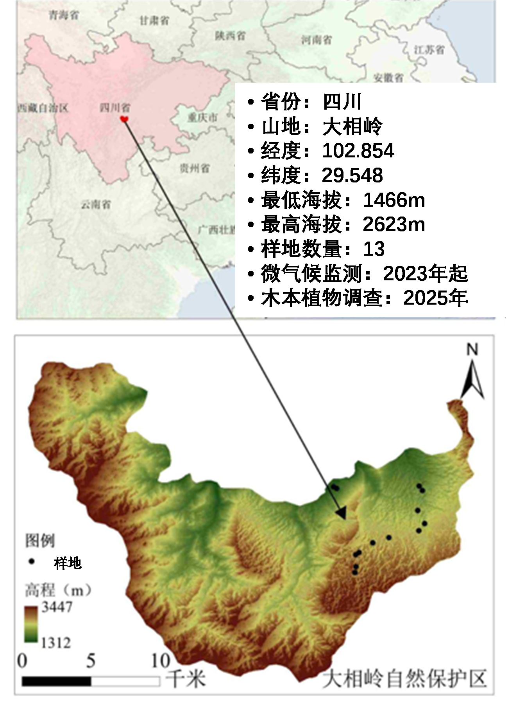

The Daxiangling study area is located in Yingjing County, Ya'an City, Sichuan Province, with core geographical coordinates of 29°28′33″–29°43′54″N and 102°29′36″–102°52′24″E. Lying on the southeastern margin of the Qinghai–Tibet Plateau, in the deep mountain–gorge section where the Sichuan Basin transitions to the Qinghai–Tibet Plateau, the area occupies a unique geographical position and an extremely important ecological location, and is a key area for biodiversity conservation in China.
The study area has a subtropical monsoon climate with pronounced mountain vertical zonation and strong spatial differentiation of climatic elements. The annual mean temperature is 15–17.6 °C, with a large diurnal temperature range, and annual precipitation is 1200–1800 mm, concentrated in summer. The landforms are dominated by high mountains and gorges, with dramatic relief, complex topography and a large elevational range, which creates strong topographic heterogeneity and a diversity of habitats. Soil types show typical vertical zonation with elevation, and are mainly mountain yellow soils and mountain brown soils.
The region preserves an intact succession series of subtropical mountain forest ecosystems, and is a core habitat and an important ecological corridor for rare and endangered species in China. Biodiversity is rich: 44 species of nationally key protected wild animals have been recorded, including the giant panda and the Sichuan golden snub-nosed monkey, both of which are first-class nationally protected animals; 17 species of nationally key protected wild plants occur in the area, typically represented by the dove tree (Davidia involucrata) and the dawn redwood (Metasequoia glyptostroboides). The conservation value of the area is therefore extremely high.
The unique climate, topography and vertical soil differentiation of the Daxiangling study area have produced a distinctly layered mountain vertical vegetation spectrum, with extremely prominent vertical zonation, which provides diverse habitats for the survival and reproduction of plants and animals.
Based on the topography and the elevational gradient of the study area, plots were laid out along the gradient. From the lowest elevation of 1466 m to the highest of 2623 m, one survey plot was established at intervals of about 100 m, giving 13 standard survey plots in total. These systematically cover the main elevational vegetation belts of the study area and fully reflect the elevational gradient patterns of vegetation and biological distribution in the region.
According to the Comprehensive Scientific Survey Report of the Sichuan Daxiangling Nature Reserve (2006), the Daxiangling mountain system is rich in plant resources with an ancient floristic composition and outstanding biodiversity. A total of 699 woody plant species belonging to 228 genera and 77 families have been recorded, together with 1541 seed plant species (including varieties) belonging to 643 genera and 137 families. Forty-four dominant families each contain 10 or more species, covering 481 genera and 1277 species, which is 31.43% of the total number of families, 73.21% of the genera and 79.76% of the species of seed plants in the area; the core dominant families are Rosaceae, Asteraceae, Poaceae, Fabaceae and Ranunculaceae. In addition, 170 fern species in 72 genera and 33 families, 210 bryophyte species in 98 genera and 46 families, and 136 species of macrofungi occur in the area, indicating a complete community structure.
The flora is notably ancient and rich in endemic Chinese elements. Twenty-four genera endemic to China are present, including Ginkgo, Cunninghamia, Eucommia, Davidia and Emmenopterys, together with 34 monotypic genera and 101 oligotypic genera, i.e. 135 genera in total, accounting for 20.55% of all genera of seed plants in the area. Large numbers of Tertiary relict plants also survive. Representative gymnosperms include Cephalotaxus, Taxus and Tsuga, while the angiosperms include the rare and ancient species Tetracentron sinense, Euptelea pleiosperma, Cercidiphyllum japonicum and Magnolia wilsonii.
The reserve is rich in key protected plant resources, with 28 species of nationally key protected plants in total. Five species are first-class nationally protected plants: Ginkgo biloba, Taxus chinensis, Davidia involucrata, Metasequoia glyptostroboides and Pseudotaxus chienii. Ten species are second-class nationally protected plants, including Picea brachytyla var. complanata, Cercidiphyllum japonicum, Davidia involucrata var. vilmoriniana, Tetracentron sinense, Toona ciliata and Phoebe zhennan. Thirteen species are third-class nationally protected plants, covering Gastrodia elata, Dysosma aurantiocaula, Coptis chinensis, Magnolia officinalis, Eucommia ulmoides and others.
The geographical composition of the seed plant flora is characterized by temperate elements. Genera with a North Temperate distribution number 168, accounting for 26.13% of the total number of genera, markedly higher than the national average of 10.03%. Tropical elements are relatively scarce: tropical Asia–tropical Africa and tropical Asia distributions account for only 3.27% and 5.29% respectively, both lower than the national averages, whereas temperate distribution types such as the East Asia–North America disjunction, the Old World Temperate distribution and the East Asian distribution all exceed the national levels. This clearly places the seed plant flora of the area within the temperate floristic system of China.
Compared with the plant resources of China as a whole, the Daxiangling reserve is remarkably rich: within a limited area it conserves 38.38% of China's seed plant families, 20.64% of its genera and 4.97% of its species, making it a core hotspot of mountain plant diversity in Southwest China.
| Category | Daxiangling | China | Percentage of China |
|---|---|---|---|
| Number of families | 137 | 357 | 38.38% |
| Number of genera | 643 | 3116 | 20.64% |
| Number of species | 1541 | ca. 31,000 | ca. 4.97% |
The special geographical position, complex topography and climate, and diverse vertical plant communities of the Daxiangling reserve create a wide range of habitats for wildlife. In terms of zoogeography, the area belongs to the Southwest Mountain Subregion of the Southwest China Region of the Oriental Realm. It is an ecological transition zone from the Qinghai–Tibet Region and the South China Region to the Central China Region, and also a meeting and transition zone between the Oriental and Palaearctic realms, with marked faunal interpenetration and very high species diversity.
Wildlife resources in the reserve are abundant: 382 vertebrate species belonging to 5 classes, 31 orders and 94 families have been recorded. These comprise 79 mammal species (7 orders, 27 families), 265 bird species (17 orders, 53 families), 11 amphibian species (2 orders, 5 families), 13 reptile species (2 orders, 3 families) and 14 fish species (4 orders, 6 families). Among the mammalian fauna, species of the Oriental Realm are absolutely dominant, accounting for 77.21%, together with 17.73% Palaearctic species. The avifauna consists mainly of residents and summer visitors, which account for 82.63%, and Oriental Realm species make up 71.69% of the breeding birds.
The reserve is home to many rare and protected animals, with more than 50 species of nationally key protected animals recorded. Nine species are first-class nationally key protected animals: the giant panda, leopard, forest musk deer, takin, black stork, scaly-sided merganser, white-tailed sea eagle, Chinese monal and black-necked crane. Thirty-seven species are second-class nationally key protected animals. The reserve also harbours 13 animal species endemic to China, such as the Emei shrew-mole, the Tibetan macaque and Reeve's muntjac. It is a core habitat for rare and relict species such as the giant panda, the red panda and the otter, with conspicuous patterns of north–south interpenetration and disjunct distribution of species, and thus has extremely high scientific and conservation value.
Between June and September 2023 the research team established 13 permanent standard plots of 20 m × 20 m at intervals of about 100 m along an elevational gradient from 1466 m to 2623 m. The plots cover the whole range of the main elevational gradient in the study area. The elevation, longitude and latitude of each plot are given in the figure and the table below.

| Plot ID | Elevation (m) | Longitude (°E) | Latitude (°N) |
|---|---|---|---|
| DXL01 | 1466 | 102.840 | 29.604 |
| DXL02 | 1522 | 102.842 | 29.602 |
| DXL03 | 1693 | 102.896 | 29.604 |
| DXL04 | 1785 | 102.898 | 29.601 |
| DXL05 | 1825 | 102.895 | 29.588 |
| DXL06 | 1950 | 102.899 | 29.580 |
| DXL07 | 2013 | 102.895 | 29.575 |
| DXL08 | 2115 | 102.876 | 29.571 |
| DXL09 | 2213 | 102.865 | 29.567 |
| DXL10 | 2337 | 102.856 | 29.561 |
| DXL11 | 2432 | 102.854 | 29.559 |
| DXL12 | 2527 | 102.854 | 29.552 |
| DXL13 | 2623 | 102.854 | 29.548 |
Shengbin Chen (陈圣宾), College of Ecology and Environment, Chengdu University of Technology: chainpin@126.com
Research Team:
Xian Wu（吴宪，College of Ecology and Environment, Chengdu University of Technology）
Ping Wang（汪平，College of Geography and Planning, Chengdu University of Technology）
Xinqiang Song（宋心强，Daxiangling Nature Reserve）
Lu Qiu（邱鹭，Mianyang Normal University）
Zhijian Shi（史志坚，College of Ecology and Environment, Chengdu University of Technology）
This site has been supported by:
Sichuan Daxiangling Nature Reserve
College of Ecology and Environment, Chengdu University of Technology